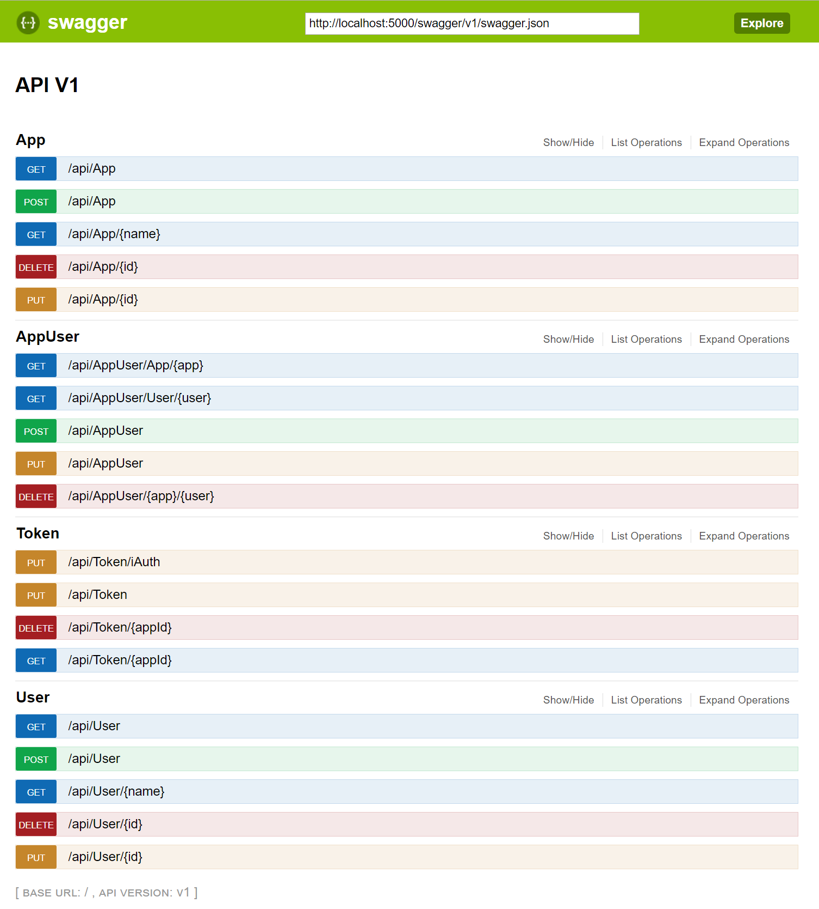

iAuth
Insite Authentication Manager
General Information
This software provides an authentication service for a wide range of programs. It handles the sign-in/out process, handles all passwords and can also handle some specific cases of user management.
Interfaces
iAuth supports the following interfaces for the communication whith the clients:
"Global": {
"UseSignalR": false,
"UseSignalRWithWebSockets": false,
"UseWebSockets": true,
"UseSwagger ": true,
"UseLogFiles": true,
"UsePlc": false
},
REST
Overall it supports a REST interfaces to sign-in/out or poll the user states. This interfaces can also manage the configuration of iAuth, so by using it, you can add/remove/update
the user-management. (currently not persistent -> this means after a restart the changes are lost). By using swagger (http://localhost:5000/swagger/ui), you can test iAuth and its REST interface.
Using the controllers for App, AppUser and User is only allowed for users of type Admin.

SignalR
"UseSignalR": true
"UseSignalRWithWebSockets": true
SignalR can also be used for getting notifications of user changes. For this, a client has to subscribe to the AuthHub with its AppId. By configuration, you can specify that SignalR should use WebSockets for the communication. By default, SignalR uses autonegotiation to find the fastest communication way, which normally was websocket, if it is activated. The server side interface of SignalR is the following:
void Subscribe(Guid appId);
void Unsubscribe();
And the client side looks like this:
public interface IAuthHubClient
{
void UserChanged(Authentication auth);
}
The Authentication structure which will be exchanged, has the following structure:
public class Authentication
{
public bool Authenticated { get; set; }
public string User { get; set; }
public string Role { get; set; }
public string Token { get; set; }
public DateTime? TokenExpires { get; set; }
}
WebSockets
"UseWebSockets": true
WebSockets can also be used for the user state change update mechanism without SignalR. For this, you have to set this option to true. On the client side you have to start the websocket with the following path:
"ws://" + IpAddress + "/ws";
If the connection was opened, you can register the client by sending the AppId of the application over the socket. On any update of the user state, you will get an message which holds an Authentication
JSON object in the data property.
.
Example:
self.start = function(){
try {
stopReconnect();
ws = new WebSocket(self.swAddress);
ws.onopen = function() { if(ws != null) ws.send(self.appId); };
ws.onmessage = function(message) { if (message.type === 'message') notifySubscribers(JSON.parse(message.data)); };
ws.onclose = function() { startReconnect(); };
if(ws.readyState > 1)
startReconnect();
} catch (error) {
startReconnect();
}
}
Plc
iAuth also provides PLC access to get the user from Plc or set the current Data in the PLC.
"Plc": {
"ConnectionString": "Data Source=127.0.0.1:102,0,2",
"Area": "DB250",
"Address": "W188",
"App": "EB97A642-78F5-4458-B8CA-036FE70298EF",
"DefaultValue": "0"
}
- The
ConnectionStringis to specify the PLC connection, for this you have to add the following parameters: [IP-Address:Port,Rack,Slot] . - The
Areaspecifies the datablock in the PLC where the data should be read or written. - The
Addressspecifies the Type (W=Word) and the Offset(188 bytes -> if you used bits, the offset should be the bit offset (Byteoffset * 8 + Bitnumber)) of the data. - The
Appspecifies the App which should used for the plc. This is important, because the PLC uses the values in theDatafield, which was specified in the AppUser, to find the correct user. - The
DefaultValuespecifies the state where no user is logged in, or the fallbackuser, if a user should always be active and if no other user is active.
Password Management
User
The user configuration is used to specify users for the system.
| Name | Type | Password | LogoutTimeInMin | Id |
|---|---|---|---|---|
| Admin | Admin | XXX | 10 | [guid] |
| Joe | Active | XXX | 10 | [guid] |
- The
Nameis free to define and it should be used case sensitive. - The
LogoutTimeInMincan specified per user (maximum time a user can be logged in). - The
Passwordis an encrypted key (so see how you can generate it, see Commandline) - The
Idis to identify the user - We support currently three user
Type's:
| Type | Description |
|---|---|
| Passive | Unpriviledged user (not used at the moment) |
| Active | Normal user to sign in/out |
| Admin | Management user to change settings |
Example
...
"Auth": {
...
"Users": [
{
"Id": "15B78F31-349D-4A75-8807-73650CBB8957",
"Type": "Admin",
"Name": "Admin",
"Password": "I4ZzXgfElW+l3ZvyF8gFURcLjdEP16vH1ZOwLlzq3iNc6V9sjac6stq0sBOcldm18R3LE20qEb3uzdfH5q2MEaq3W6ECbjk3/ySMrhvb5XWICAuDFLgKaANcqHTnjwsTGt07eUJQ36Mn2+cyhik4RPoeNgtBbMKp/o6mxJKMAy5iSx12Ljtx+v7Fm2eF+AtUvgCppX1/cGZ1EftoYWZ6VbmR761ScXKRf/FIUTxROwYtjBSPGIwHhG2kjwA8ZfYx0XtJMMrWlglIvvSoaUtiaZ5A2odJalGMs2XgV9XR+FRcDFEe1mzEejgWODD3eawPB/EjnO0dCt//7VCi0zf/7w==", //SUNRISE
"LogoutTimeInMin": 10
},
...
]
}
...
App Users
To setup each application which uses iAuth, you have to assigne a name with an key. (if an application will get the auth-state , it uses the Id for the request)
| Name | Id | LogoutTimeInMin |
|---|---|---|
| HMI | [guid] | 10 |
| INAX | [guid] | 10 |
- The
Nameis free to define and is should be used case sensitive. - The
LogoutTimeInMincan specified per app (maximum time a user can be logged in; if a user and an app have specified this value, the lowest value will be used). - The
Idis to identify the application
Example
...
"Auth": {
...
"Apps": [
{
"Id": "EB97A642-78F5-4458-B8CA-036FE70298EF",
"Name": "WinCCFlex",
"LogoutTimeInMin": 10
}
],
...
}
App-User Relation
This section is to map the user with the apps and specify additional data to exchange.
For example, if HMI asks for current AuthState, it will get a number (e.g. 9) as the result.
| AppId | UserId | Data |
|---|---|---|
| [guid] | [guid] | 9 |
| [guid] | [guid] | Admin |
- The
AppIdis the Id of a specified app. - The
UserIdis the Id of a specified user. - The
Datafield specifies some additional data which will be sent to the client we it signs in, or requests a state update.
Security key
To handle security like password encryption, iAuth generates a keyfile if nothing is found. The path of this file can be specified in the configuration. Attention: If this file is changed, the passwords which were created with this file could no longer be encrypted.
"Auth": {
"KeyFile": ".\\iAuth.key",
}
Logging
Logging can be specified for one in the Logging section of the appsettings.json and otherwise in the nlog.config. For more details, look at the Nlog documentation.
"Logging": {
"NLogConfig" : "nlog.config",
"IncludeScopes": false,
"LogLevel": {
"Default": "Information",
"System": "Information",
"Microsoft": "Information"
}
},
Commandline
Copyright (c) insite-gmbh 2017
iAuth is intended to be run as windows service. Use one of the following options:
--register-service Registers and starts this program as a windows service named [ServiceDisplayName]
All additional arguments will be passed to ASP.NET Core's WebHostBuilder.
--unregister-service Removes the windows service creatd by --register-service.
--interactive Runs the underlying asp.net core app.
--config Specifies the path to the config file.
--appsettings Set the name of the config file [default=appsettings].
--urls="http://localhost:10000/" Application bounded url
e.g. :
iAuth --register-service --config="C:\Path\To\Configs" --appsettings="appsettings"